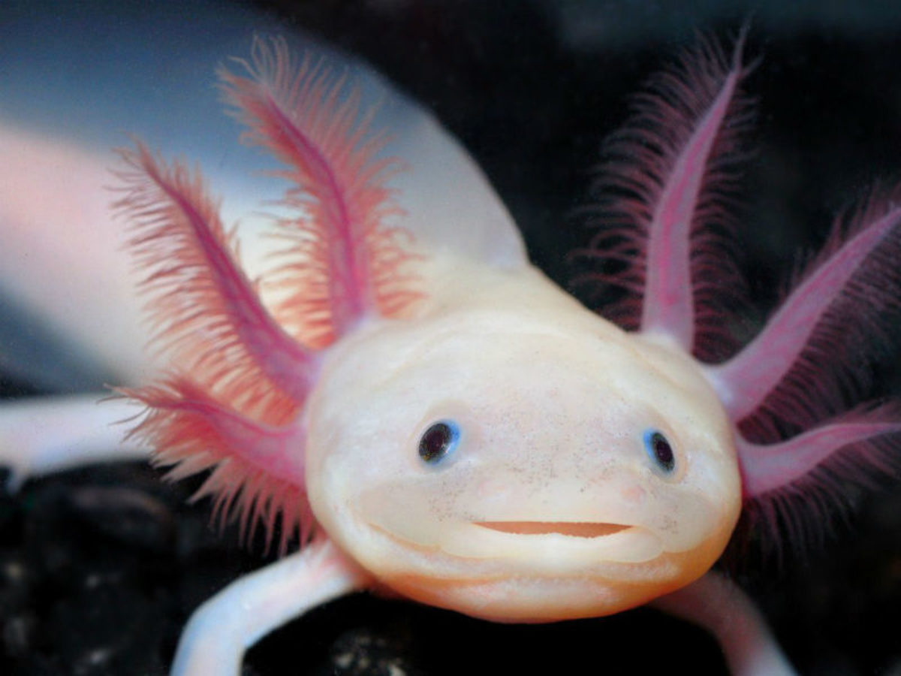
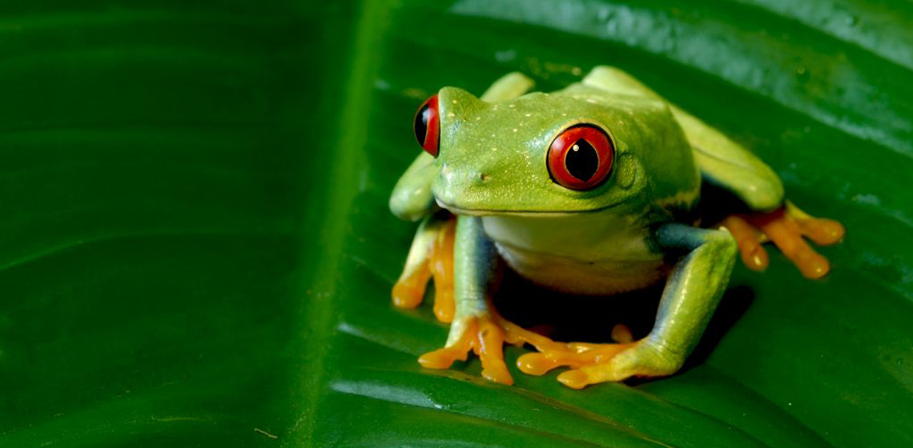
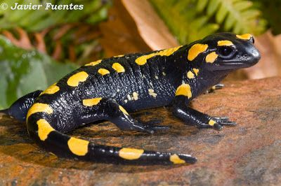
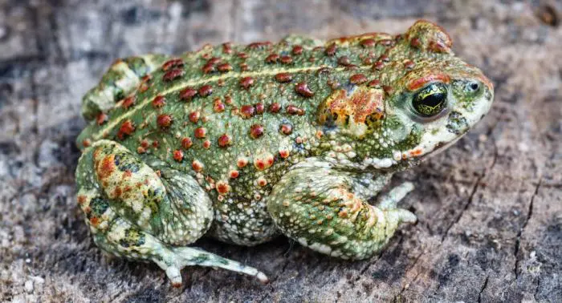

Clasificación Animal
Mamíferos
Aves
Reptiles
Anfibios
Peces
Artrópodos
Información adicional
Ejemplos de anfibios
El ajolote

Su navegador no soporta videos
video
mp4.
La rana verde de ojos rojos

Su navegador no soporta videos
video
mp4.
La salamandra manchada

Su navegador no soporta videos
video
mp4.
El sapo

Su navegador no soporta videos
video
mp4.